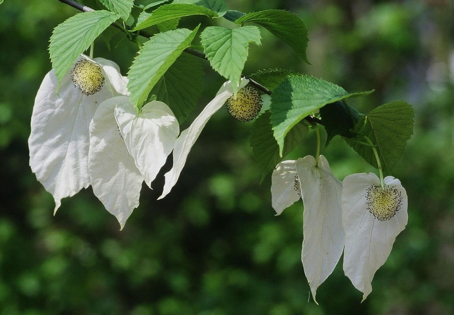
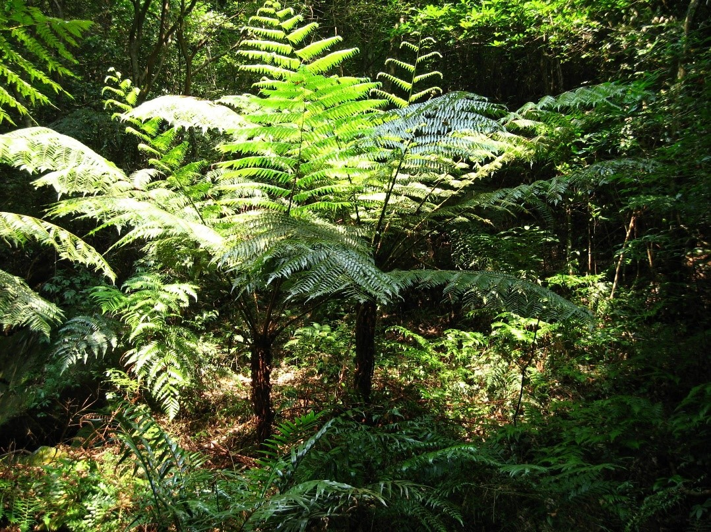
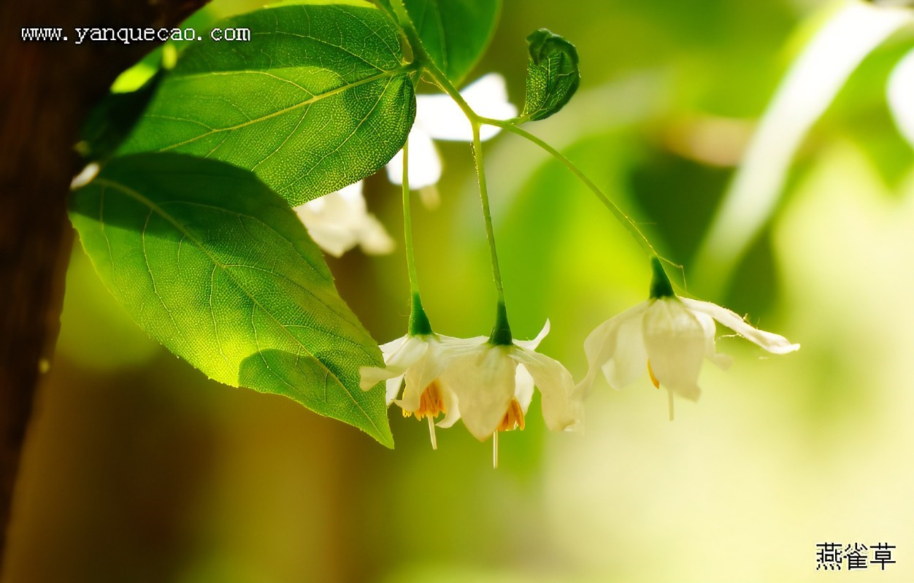
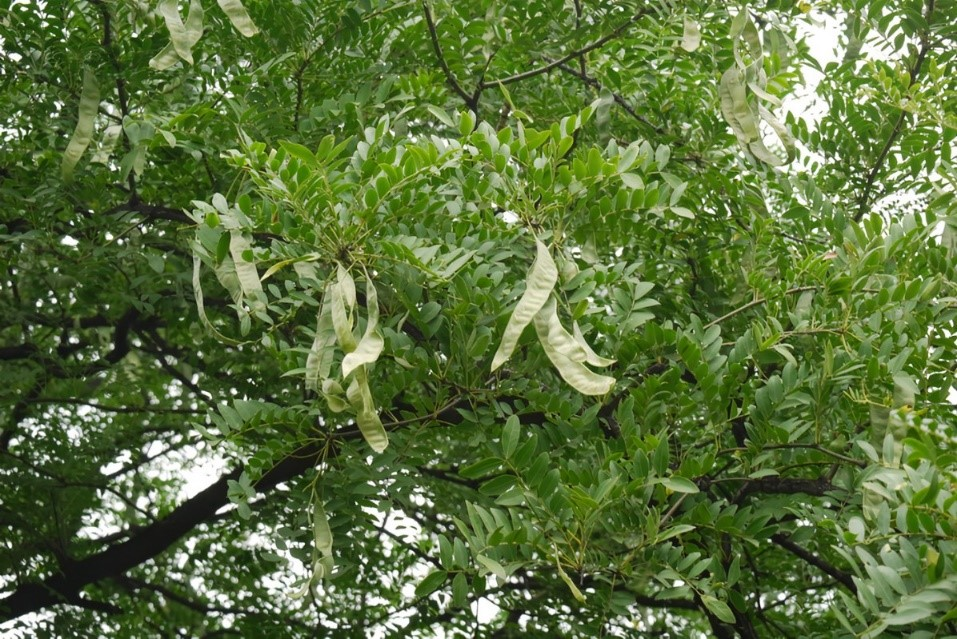
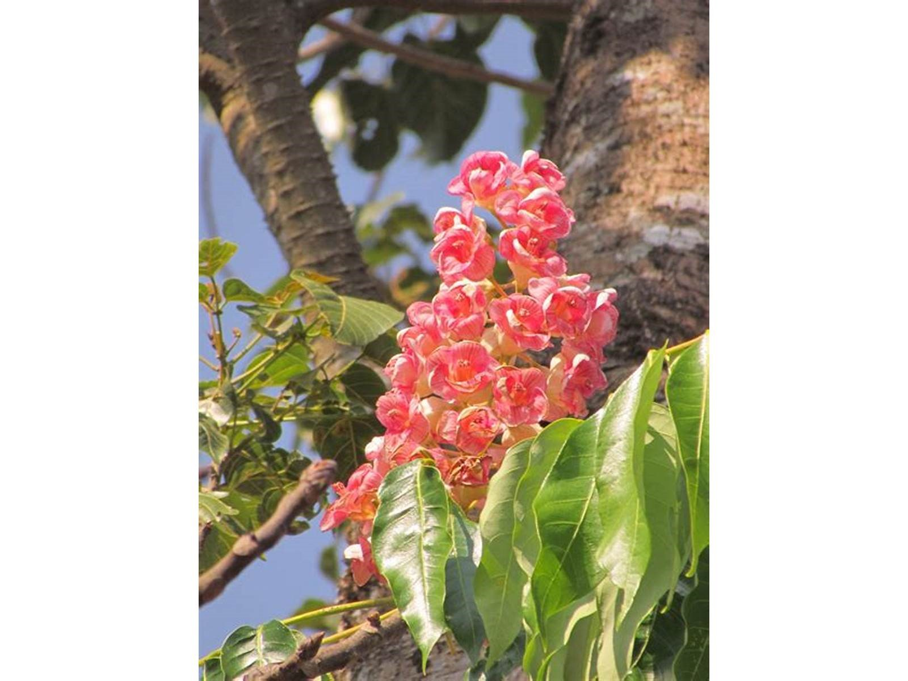

珍稀植物园
珍稀植物园的建设始于1985年，面积约100亩，共迁地保育植物 700 多种，其中珍稀濒危植物 118 种，国家一级保护植物有银杉、珙桐、水杉、伯乐树（钟萼木）、南方红豆杉、金花茶、银杏、水松、落叶木莲9种。湖南特有植物有长果秤锤树、绒毛皂荚、桃源野桐等。区内有天然形成的樟树群落，另外有通过仿 生栽培的珍稀植物、木兰科、壳斗科和杜英科植物等 多种群落。园内种类多样，森林茂密，四季常青，色彩 丰富。

珙桐
落叶乔木，高可达25米；树皮深灰色或深褐色，常裂成不规则的薄片而脱落。 珙桐喜欢生长在海拔1500-2200米的润湿的常绿阔叶落叶阔叶混交林中。多生于空气阴湿处，喜中性或微酸性腐殖质深厚的土壤，在干燥多风、日光直射之处生长不良，不耐瘠薄，不耐干旱。幼苗生长缓慢，喜阴湿，成年树趋于喜光。 珙桐已被列为国家一级重点保护野生植物，为中国特有的单属植物，属孑遗植物，也是全世界著名的观赏植物。 珙桐有“植物活化石”之称，是国家8种一级重点保护植物中的珍品，因其花形酷似展翅飞翔的白鸽而被西方植物学家命名为“中国鸽子树”。

桫椤
别名蛇木，是桫椤科、桫椤属蕨类植物，有“蕨类植物之王”赞誉。桫椤是能长成大树的蕨类植物，又称“树蕨”。 桫椤的茎直立，中空，似笔筒，叶螺旋状排列于茎顶端。 是目前已经发现的唯一的木本蕨类植物，极其珍贵，堪称国宝，被我国列为国家二级保护植物，有“活化石”之称。 生于山地溪傍或疏林中，海拔260-1600米。桫椤为半荫性树种，喜温暖潮湿气候，喜生长在冲积土中或山谷溪边林下。 桫椤树形美观，树冠犹如巨伞，虽历经沧桑却万劫余生，依然茎苍叶秀，高大挺拔，称得上是一件艺术品。

长果秤锤树
长果秤锤树是安息香科、秤锤树属乔木，高可达12米，树皮平滑，不开裂；冬芽细小，圆锥状卵形，有灰褐色星状柔毛。叶薄纸质，叶片卵状长圆形、椭圆形或卵状披针形，边缘有细锯齿。此树花黄白色，颇鲜艳，果硕长，形态特殊，可引种为庭园观赏树。长果秤锤树植株稀少，又濒临灭绝，是湖南特有的珍稀植物，国家二级保护植物。 生长于低山山腰、山谷及水溪边常绿阔叶林中或林缘，产地年平均地温约14℃，年降水量1600-1800毫米。母岩为页岩或石灰岩，属山地黄壤或褐色石灰土。 中国仅分布湖南石门县壶瓶山及桑植县。杭州、上海、南京等地有栽培。

绒毛皂荚
豆科，皂荚属山皂荚的变种，落叶乔木或小乔木，高可达25米；小枝微有棱，光滑无毛；粗壮，常分枝，叶羽状复叶，叶片先端圆钝，有时微凹，微粗糙，网脉不明显；小叶柄极短。花黄绿色，穗状花序；花序腋生或顶生，雄花：深棕色，萼片三角状披针形，花瓣椭圆形，子房无毛，花柱短，胚珠多数。荚果荚果上密被黄绿色绒毛。种子多数，椭圆形，4-6月开花；6-11月结果。 中国湖南衡山特产。生长在海拔950米的山地，路边疏林中。湖南师范学院和湖南林校栽培数株，系自南岳广济寺绒毛皂荚一母株采得种子繁殖。 绒毛皂荚为极稀少的树种，是国家一级保护野生植物。
